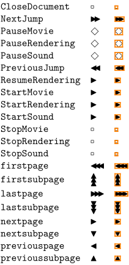
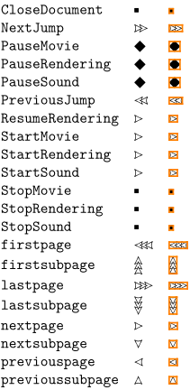
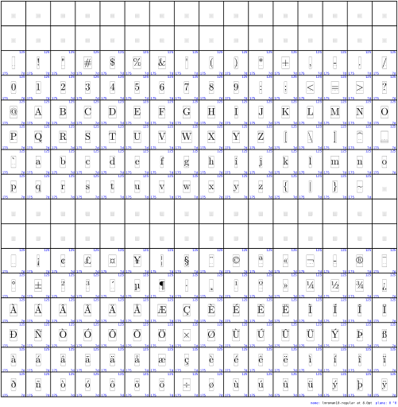

Contents
You can load the Navigational Symbols with
\usesymbols[jmn]
There are several symbol sets defined. If you want the black symbol for lastpage
(
), you can either load the whole navigation 1 sybol set first:
\setupsymbolset [navigation 1] \symbol [lastpage]
or use it as
\symbol[navigation 1][lastpage]
The font itself is included in ConTeXt.
Symbol sets
-
%\setuplayout[scale=0.7] \usesymbols[jmn] \showsymbolset[navigation 1]
- 
-
%\setuplayout[scale=0.7] \usesymbols[jmn] \showsymbolset[navigation 2]
-
%\setuplayout[scale=0.7] \usesymbols[jmn] \showsymbolset[navigation 3]
-

-
%\setuplayout[scale=0.7] \usesymbols[jmn] \showsymbolset[navigation 4]
- 
All glyphs
-
%\setuplayout[scale=0.7] \showfont[NavigationNormal]
- 
-
%\setuplayout[scale=0.7] \showfont[NavigationShadowed]
-

See also
- source: symb-jmn.mkii , symb-imp-jmn.mkiv